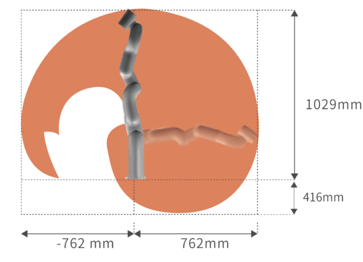
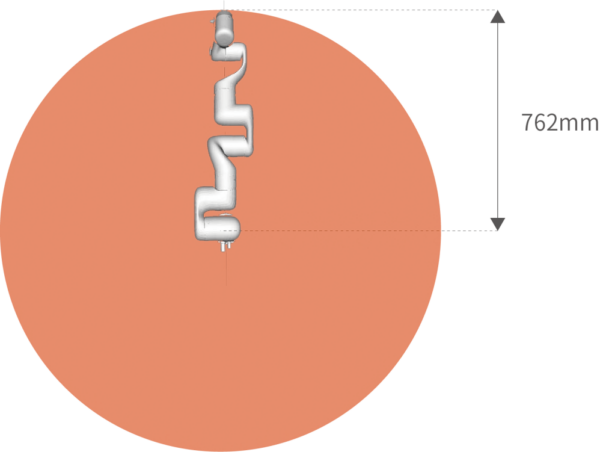
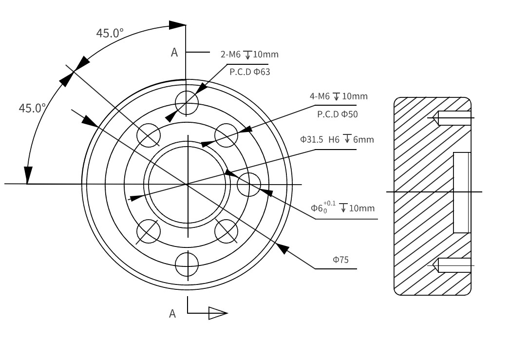
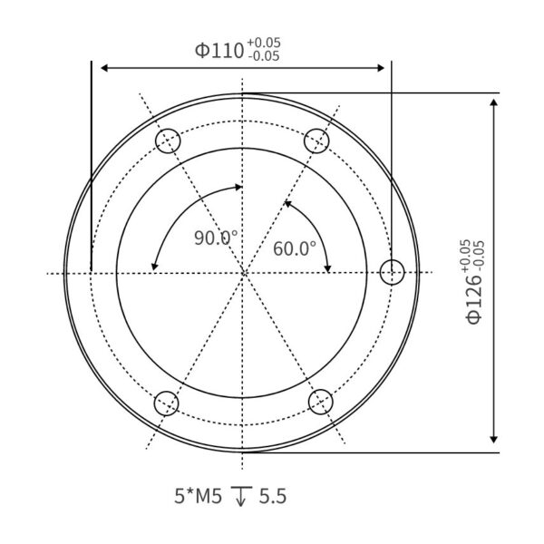

Arm
Robot Specifications
Working Range
working space of xarm robots
 {kind=link}
{kind=link}
Dimensions
robot tool head
{kind=link}
robot base (mounting) plate
{kind=link}
General Specificatinos
Key |
Value |
|---|---|
robot model |
UFactory xArm6 |
payload |
5kg |
dof |
6 |
reach |
700mm |
weight |
12.2kg |
drives |
harmonic drive, servomotors |
body construction |
carbon fiber |
collision detection |
yes |
robot programming platforms |
macos, windows, android (browser…) |
sdk |
python, c++, ros, ros2, with examples |
accssories |
finger gripper, vacuum gripper, BIO gripper, 6axis force torque sensor, linear rail and motor |
UFactory xArm Model Comparison
spec |
xarm5 |
xarm6 |
xarm7 |
|---|---|---|---|
Payload |
3kg |
5kg |
3.5kg |
Reach |
700mm |
700mm |
700mm |
Degrees of freedom |
5 |
6 |
7 |
Repeatability |
±0.1mm |
±0.1mm |
±0.1mm |
Maximum Speed |
1m/s |
1m/s |
1m/s |
Weight(robot arm only) |
11.2kg |
12.2kg |
13.7kg |
spec |
xArm5 |
xArm6 |
xArm7 |
|---|---|---|---|
Maximum Speed |
180°/s |
180°/s |
180°/s |
Joint 1 |
±360° |
±360° |
±360° |
Joint 2 |
-118°～120° |
-118°～120° |
-118°～120° |
Joint 3 |
-225°~11° |
-225°~11° |
±360° |
Joint 4 |
-97°~180° |
±360° |
-11°～225° |
Joint 5 |
±360° |
-97°~180° |
±360° |
Joint 6 |
±360° |
-97°~180° |
|
Joint 7 |
±360° |
Hardware
xArm |
Robot Specs |
|---|---|
*Ambient Temperature Range |
0-50℃ |
Power Consumption |
Min 8.4 W, Typical 200 W, Max 400 W |
Input Power Supply |
24V DC，16.5A |
Footprint |
Ø 126 mm |
Materials |
Aluminum, Carbon Fiber |
Base Connector Type |
M5*5 |
ISO Class Cleanroom |
5 |
Robot Mounting |
Any |
End Effector Communication Protocol |
Modbus RTU(rs485) |
End Effector I/O |
2DI/2DO/2AI/1RS485 |
Communication Mode |
Ethernet |
AC Control Box |
DC Control Box |
|
|---|---|---|
Input |
100-240VAC 50/60Hz |
24VDC |
Output |
24VDC 20.8A |
24VDC 672Wmax |
Weight |
3.9kg |
2.6kg |
Dimension(LWH) |
285135101mm |
26216076mm |
Control Box IO |
16DI/16DO/2AI/2AO |
16DI/16DO/2AI/2AO |
Communication |
Ethernet, RS485 Master1, RS485 Slaver1 |
Ethernet, RS485 Master1, RS485 Slaver1 |
Hardware Compatibility
Interfaces with any product that has 12~24V general purpose inputs/outputs ModBus RTU (RS485)
Warranty
1-year warranty against manufacturer defects Stress tested to last a minimum of 3 years of full-time use
Parts in box
Resources
robot manufacturer page nist robot documentation robot manual